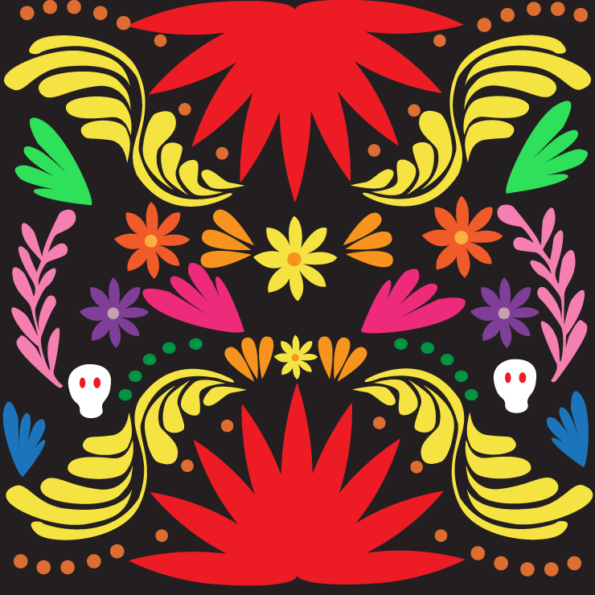

Color Mini Site

This color mini site has many beautiful combinations of color schemes. Dia de Muertos and my Mexican heritage were large contibutors to the design inspirations and color combonations. You will find combinations of Complementary, Analagous, and others that create beautifully colorful displays.